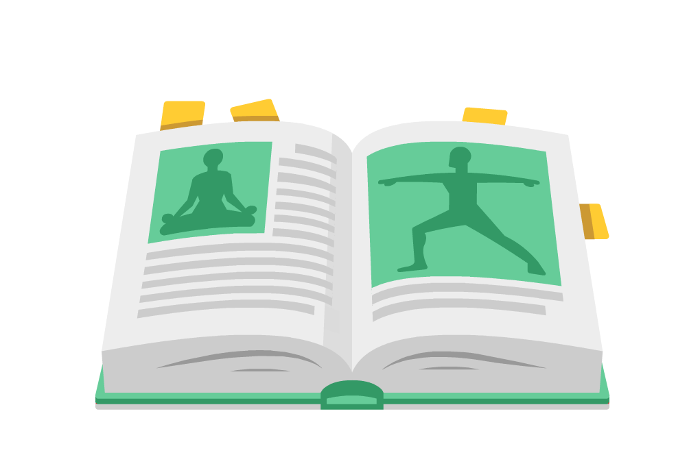

What is Yoga?
More than a physical workout, yoga is a full mind and body exercise.
Yoga is a group of physical, mental, and spiritual practices or disciplines which originated in ancient India.
瑜伽起源于古印度,是一组身体、心理和精神练习或修炼。
A set of specific exercises, called poses, combined with specific breathing techniques and meditation principles are the building blocks of a yoga class. If a pose causes pain or proves too difficult, there are variations and modifications that can be made to help students. Props like blocks, blankets and straps — even chairs — can be used to help you get the most benefit from the poses. Yoga is not one-size-fits-all: The best yoga workout for you will depend on your individual needs and goals.
瑜伽体式结合了特定的呼吸技巧和冥想原则，是瑜伽课的基础。如果某一体式引起了疼痛或太难完成，可以对动作做一些变化和修改。像瑜伽砖、毯子和弹力带这样的道具，甚至椅子，都可以让你从体式中获益良多。
The benefits of a regular yoga practice are wide-ranging. In general, a complete yoga workout can help keep your back and joints healthy, improve your overall posture, stretch and strengthen muscles and improve your balance.
定期练习瑜伽有很多好处。一般来说，一套完整的瑜伽可以帮助你保持背部和关节健康，改善整体体态，拉伸和加强肌肉，改善平衡。